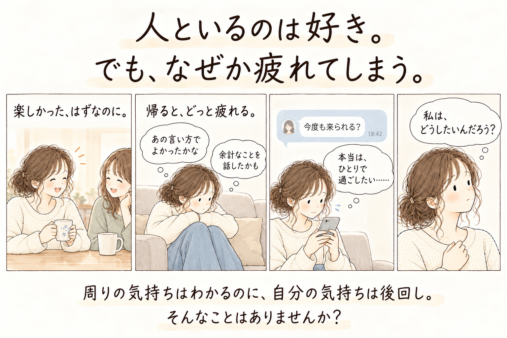

A LITTLE TIME FOR YOURSELF
人に合わせる毎日から、
わたしを知る時間へ。
人と会うのは好き。
でも、帰宅するとどっと疲れてしまう。
そんなあなたへ、自分の感じ方を知る小さなきっかけを。
無料でHSPタイプを診断する登録不要・無料で診断できます。
DO YOU FEEL THIS WAY?
人といるのは好き。
でも、なぜか疲れてしまう。
友達と会って、楽しい時間を過ごしたはずなのに。
家に帰ると、どっと疲れている。
「あの言い方でよかったかな」
「余計なことを話してしまったかも」
気づけば、頭の中でひとり反省会。
本当はひとりで過ごしたかったのに、誘われると断れなかったり。

周りの人の希望はすぐにわかるのに、自分が何をしたいのかは、なかなかわからなかったり。
そんなことはありませんか？
FREE HSP TYPE CHECK
人付き合いで疲れてしまう理由を、少し整理してみませんか。
人といるのは好きなのに、帰宅するとぐったりしてしまう。
そんな自分の感じ方や行動の傾向を、無料診断で振り返ってみませんか。
診断をきっかけに振り返りたいこと
- 疲れやすさにつながる自分の傾向
- 自分が持っている強み
- 毎日を少しラクにするヒント
登録不要・自己理解のための無料診断です。
※この診断は医学的な診断ではありません。
GET TO KNOW YOURSELF
自分を変える前に、
自分を知ってみる。
もっと気にしない性格になれたら。
もっと上手に人付き合いができたら。
そう思って頑張ってきたかもしれません。
でも、疲れやすさの理由を知らないまま、自分を変えようとするのは大変なこと。
周りの人と同じようにできることよりも、自分に合った過ごし方を見つけることを大切にしてみませんか。

Risa Kawakami川上 りさ
ABOUT ME
はじめまして
海外で暮らしていた頃、妻として、母として、周囲との関係を大切にすることを優先していました。
人とのつながりは大切。でも、周りに合わせることばかり考えていると、自分がどうしたいのか、わからなくなることもありました。
そんな経験から、今は「自分を変える前に、自分を知ること」を大切にしています。
人間関係や好きなこと、自分らしい生き方について、Kindleや日々の発信を通してお届けしています。
自分の感覚を大切にする、小さなきっかけになればうれしいです。


A LITTLE MORE ABOUT YOU
もっと自分を知りたい方へ
自分の傾向を知ったら、次は日々の過ごし方や、自分の気持ちにも目を向けてみませんか。
公式LINEでは、自己理解に役立つ無料コンテンツをまとめてご案内しています。
LINEで無料プレゼントを受け取る無料プレゼントの受け取りには、公式LINEへの登録が必要です。
登録済みの方：無料プレゼントページへYOUR OWN PACE, YOUR OWN WAY

そろそろ、自分の気持ちにも
目を向けてみませんか。
人に合わせることが当たり前になっていた毎日から。
まずは、自分のことを知る小さな一歩を。
無料でHSPタイプを診断する登録不要・無料で診断できます。
※この診断は自己理解を目的としたもので、医学的な診断ではありません。